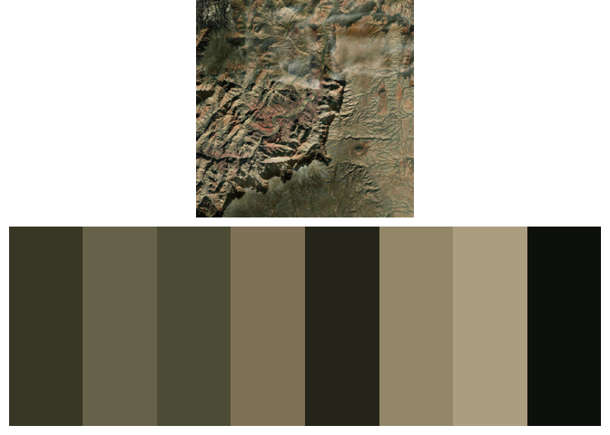
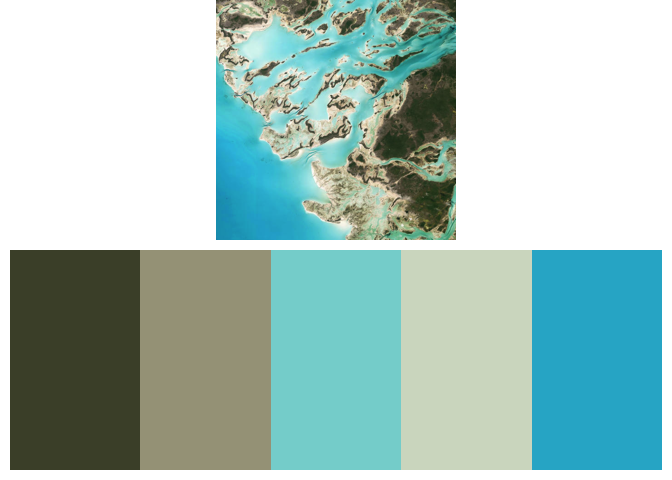
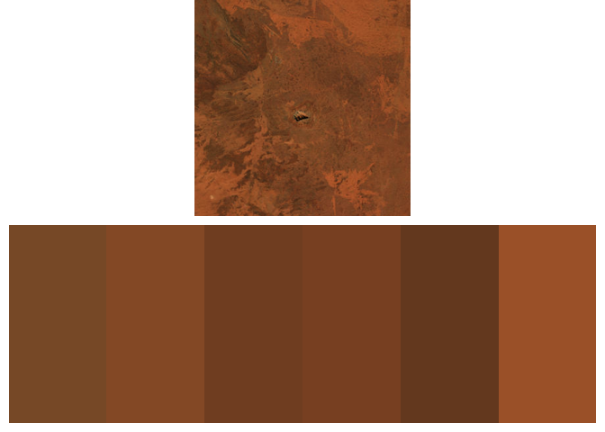
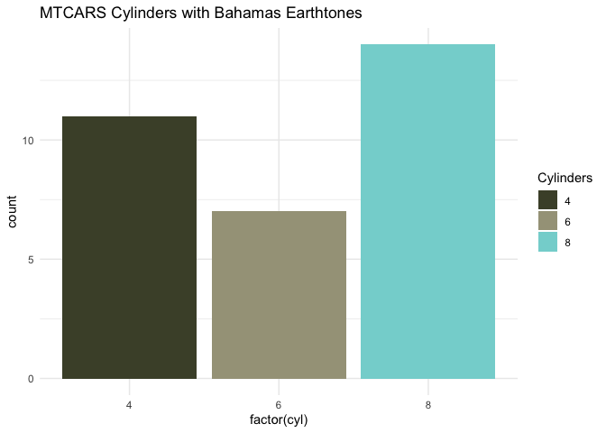

Overview
earthtones is an R package designed to extract color palettes from satellite imagery, providing visually appealing earth-inspired color schemes.
Installation
Install the released version from CRAN:
#install.packages("earthtones")Or the latest development version from GitHub:
remotes::install_github("wcornwell/earthtones")Load the package:
library("earthtones")Usage
earthtones provides the function get_earthtones, which:
- Downloads satellite imagery from a supported provider (e.g., Esri).
- Converts image colors into a perceptually uniform color space (CIE LAB).
- Identifies dominant colors using clustering methods (
kmeansorpam). - Returns an aesthetically pleasing color palette.
Example: Grand Canyon
get_earthtones(latitude = 36.094994, longitude = -111.837962,
zoom = 12, number_of_colors = 8)
Adjust number_of_colors to control how many dominant colors are returned. The zoom parameter controls the level of detail, with larger numbers providing closer views.
Example: The Bahamas
Explore vibrant tropical colors:
get_earthtones(latitude = 24.2, longitude = -77.88, zoom = 11, number_of_colors = 5)
Example: Uluru, Australia
Earth tones from the iconic Australian landscape:
get_earthtones(latitude = -25.33, longitude = 131.0396, zoom = 10, number_of_colors = 6)
Using Palettes in Your Own Visualizations
To retrieve the color palette without plotting the map, set include.map = FALSE:
palette <- get_earthtones(latitude = 24.2, longitude = -77.88,
zoom = 11, number_of_colors = 5,
include.map = FALSE)
print(palette)
#> [1] "#4A4E35" "#A5A188" "#84D4D3" "#D3DCC9" "#29B3CF"This returns a standard R color palette ready to be used directly in your visualizations or designs.
Example with ggplot2
Here’s how you might apply the palette to a ggplot2 visualization:
library(ggplot2)
# Generate the palette
bahamas_palette <- get_earthtones(latitude = 24.2, longitude = -77.88,
zoom = 11, number_of_colors = 5,
include.map = FALSE)
# Example ggplot
ggplot(mtcars, aes(factor(cyl), fill = factor(cyl))) +
geom_bar() +
scale_fill_manual(values = bahamas_palette) +
theme_minimal() +
labs(title = "MTCARS Cylinders with Bahamas Earthtones",
fill = "Cylinders")
Contributing
Contributions are welcome! Please report issues or suggest features on the GitHub issues page. Pull requests are also encouraged.
Citation
If you use earthtones in your research or projects, please cite it using:
citation("earthtones")
#> To cite package 'earthtones' in publications use:
#>
#> Cornwell W, Lyons M, Murray N (2025). _earthtones: Derive a Color
#> Palette from a Particular Location on Earth_. R package version
#> 0.2.0, commit 07ed455773577ab5b0a2a68cd45b0f1384ab2a7f,
#> <https://github.com/wcornwell/earthtones>.
#>
#> A BibTeX entry for LaTeX users is
#>
#> @Manual{,
#> title = {earthtones: Derive a Color Palette from a Particular Location on Earth},
#> author = {Will Cornwell and Mitch Lyons and Nick Murray},
#> year = {2025},
#> note = {R package version 0.2.0, commit 07ed455773577ab5b0a2a68cd45b0f1384ab2a7f},
#> url = {https://github.com/wcornwell/earthtones},
#> }